The Advection-Reaction-Dispersion Equation
Conservation of mass for a chemical that is transported (fig. 1) yields the advection-reaction-dispersion (ARD) equation:
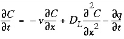
, (107)
where
C
is concentration in water (mol/kgw),
t
is time (s),
v
is pore water flow velocity (m/s),
x
is distance (m),
D
L
is the hydrodynamic dispersion coefficient [m
2
/s,  , with
D
e
the effective diffusion coefficient, and
, with
D
e
the effective diffusion coefficient, and  the dispersivity (m)], and
q
is concentration in the solid phase (expressed as mol/kgw in the pores). The term 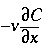
represents advective transport, 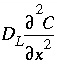
represents dispersive transport, and 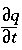
is the change in concentration in the solid phase due to reactions (
q
in the same units as
C
). The usual assumption is that
v
and
D
L
are equal for all solute species, so that
C
can be the total dissolved concentration for an element, including all redox species.
the dispersivity (m)], and
q
is concentration in the solid phase (expressed as mol/kgw in the pores). The term 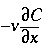
represents advective transport, 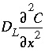
represents dispersive transport, and 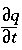
is the change in concentration in the solid phase due to reactions (
q
in the same units as
C
). The usual assumption is that
v
and
D
L
are equal for all solute species, so that
C
can be the total dissolved concentration for an element, including all redox species.
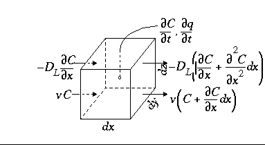
Figure 1.
--Terms in the advection-reaction-dispersion equation.
The transport part of equation 107 is solved with an explicit finite difference scheme that is forward in time, central in space for dispersion, and upwind for advective transport. The chemical interaction term 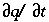
for each element is calculated separately from the transport part for each time step and is the sum of all equilibrium and non-equilibrium reaction rates. The numerical approach follows the basic components of the ARD equation in a split-operator scheme (Press and others, 1992; Yanenko, 1971). With each time step, first advective transport is calculated, then all equilibrium and kinetically controlled chemical reactions, thereafter dispersive transport, which is followed again by calculation of all equilibrium and kinetically controlled chemical reactions. The scheme differs from the majority of other hydrogeochemical transport models (Yeh and Tripathi, 1989) in that kinetic and equilibrium chemical reactions are calculated both after the advection step and after the dispersion step. This reduces numerical dispersion and the need to iterate between chemistry and transport.
A major advantage of the split-operator scheme is that numerical accuracy and stability can be obtained by adjusting time step to grid size for the individual parts of the equation. Numerical dispersion is minimized by always having the following relationship between time and distance discretization:
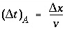
, (108)
where  is the time step for advective transport, and 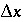
is the cell length. Numerical instabilities (oscillations) in the calculation of diffusion/dispersion are eliminated with the constraint:
is the time step for advective transport, and 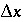
is the cell length. Numerical instabilities (oscillations) in the calculation of diffusion/dispersion are eliminated with the constraint:
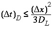
, (109)
where 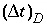
is the time step (s) for dispersive/diffusive transport calculations. The two conditions of equation 108 and 109 are the Courant condition for advective transport and the Von Neumann criterion for dispersive transport calculations, respectively (for example, Press and others, 1992). Numerical dispersion is in many cases negligible when 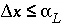
, because physical dispersive transport is then equally or more important than advective transport. When a fine grid is used to reduce numerical dispersion, the time step for dispersive transport calculations (equation 109) may become smaller than the time step for advective calculations (equation 108), because the first has quadratic dependence on grid size. The conflict is solved by multiple dispersion time steps such that 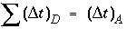
, and calculating chemical reactions after each of the dispersion time steps. For input to PHREEQC, a time step must be defined which equals the advection time step 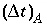
, or, if diffusion is modeled, equals the diffusion period. Furthermore, the number of
shifts
must be defined, which is the number of advection time steps (or diffusion periods) to be calculated.
Dispersive transport in a central difference scheme is essentially mixing of cells. A mixing factor
mixf
is defined as
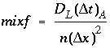
, (110)
where
n
is a positive integer. The restriction is that never more is mixed out of a cell than stays behind, that is,
mixf
must be less than 1/3 as follows from equation 109. When, according to equation 110 with
n
= 1,
mixf
is greater than 1/3, the value of
n
is increased such that
mixf
is less than or equal to 1/3. The dispersion time step is then 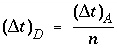
and
n
mixes are performed.
The numerical scheme has been checked by comparison with analytical solutions for simple cases with linear exchange. Linear exchange results when the exchange coefficient for the exchange half-reaction is equal for two homovalent cations. It gives a linear retardation
R
= 1 +
CEC / C
, where
CEC
is the cation exchange capacity, expressed in mol/kgw. In the following example, a 130 m flow tube contains water with an initial concentration
C
(
x
,0) =
C
i
= 0. The displacing solution has concentration
C
=
C
0
= 1 mmol/kgw, and the pore-water flow velocity is
v
= 15 m/year. The dispersivity is  m, and the effective diffusion coefficient is
D
e
= 0 m
2
/s. The profile is given after 4 years for two chemicals, one with
R
= 1 (Cl
-
) and the other with
R
= 2.5 (Na
+
).
m, and the effective diffusion coefficient is
D
e
= 0 m
2
/s. The profile is given after 4 years for two chemicals, one with
R
= 1 (Cl
-
) and the other with
R
= 2.5 (Na
+
).
Two boundary conditions can be considered for this problem. One entails a flux or third type boundary condition at
x
= 0:
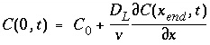
. (111)
This boundary condition is appropriate for laboratory columns with inlet tubing much smaller than the column cross section. The solution for the ARD equation is then (Lindstrom and others, 1967):
 , (112)
, (112)
where, with 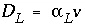
:
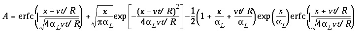
. (113)
Figure 2 shows the comparison for three simulations with different grid spacings,  = 15, 5, and 1.67 m, which correspond with 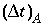
= 1, 1/3, and 1/9 years, respectively. For Cl
-
, which has
R
= 1, the fronts of the three simulations are indistinguishable and in excellent agreement with the analytical solution. For the retarded ion Na
+
, which has
R
= 2.5, the average location of the breakthrough curve for all grid spacings is correct and is in agreement with the analytical solution. However, the simulations with coarser grids show a more spread-out breakthrough that is due to numerical dispersion. The finest grid gives the closest agreement with the analytical solution, but requires the most computer time.
= 15, 5, and 1.67 m, which correspond with 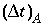
= 1, 1/3, and 1/9 years, respectively. For Cl
-
, which has
R
= 1, the fronts of the three simulations are indistinguishable and in excellent agreement with the analytical solution. For the retarded ion Na
+
, which has
R
= 2.5, the average location of the breakthrough curve for all grid spacings is correct and is in agreement with the analytical solution. However, the simulations with coarser grids show a more spread-out breakthrough that is due to numerical dispersion. The finest grid gives the closest agreement with the analytical solution, but requires the most computer time.
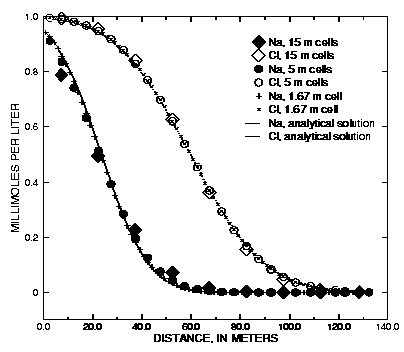
Figure 2.
--Analytical solution for 1D transport with ion-exchange reactions and flux boundary condition compared with PHREEQC calculations at various grid spacings.
Computer time is primarily dependent on the number of calls to the geochemical subroutines of PHREEQC, and in the absence of kinetic reactions, the number of calls is proportional to (number of cells) x (number of advection steps) x (1 + number of dispersion steps). In this example, 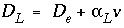
= 0 + 5 x 15 m
2
/yr. Thus, by equation 110,
mixf
= 1/3, 1, and 3, respectively for the progressively smaller cell sizes. For the 15-meter cell-size (
mixf
= 1/3), one dispersion step is taken for each advection step; for the 5-meter cell size (
mixf
= 1), three dispersion steps are taken for each advection step; and for the 1.67-meter cell size (
mixf
= 3), nine dispersion steps are taken for each advection step. Figure 2 shows profiles the advective front of Cl (
C/C
0
= 0.5) after 4 years of travel, when it has arrived at 60 m; for the 15-meter cell size, this requires 4 advection steps. The flowtube consists of 9 cells for which geochemical calculations are done for each step; therefore, the number of the reaction calculations is 9 x 4 x (1 + 1) = 72. Larger numbers of cells and advection steps apply for the smaller grids. The number of calls to the reaction calculations for the other two cases is 27 x 12 x (1 + 3) = 1,296; and 81 x 36 x (1 + 9) = 29,160.
The examples given here have linear retardation to enable comparison with analytical solutions. However, linear retardation is subject to large numerical dispersion, and the examples are, in a sense, worst cases with respect to numerical dispersion. In many cases of geochemical interest, the chemical reactions help to counteract numerical dispersion because the reactions tend to sharpen fronts, for example with precipitation/dissolution reactions and displacement chromatography. In other cases, exchange with a less favored ion may give a real, chemical dispersion that exceeds the effects of numerical dispersion.
Another boundary condition is the Dirichlet, or first-type, boundary condition, which involves a constant concentration
C
(0,
t
) at
x
= 0:
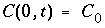
. (114)
This boundary condition is valid for water infiltrating from a large reservoir in full contact with the underlying soil, for example infiltration from a pond, or diffusion of seawater into underlying sediment. The solution for the ARD equation is in this case (Lapidus and Amundson, 1952):
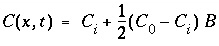
, (115)
where,
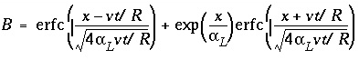
. (116)
Figure 3 shows the results of three simulations with the same discretizations as the previous transport example. Again, the conservative solute (Cl
-
with
R
= 1) is modeled accurately for all three grid sizes. The retarded chemical (Na
+
,
R
= 2.5) shows numerical dispersion for the coarser grids, but again, the average front locations agree. With the constant concentration-boundary condition, the number of dispersion time steps is twice the number for the flux case because of the specified condition at
x
= 0. Also the effect of the first-type boundary condition is to increase diffusion over the contact surface of the column with the outer solution. The flux of chemical over the boundary is correspondingly larger and the fronts have progressed a few meters further than in figure 2. More comparisons of analytical solutions are given in the discussion of example 11 (breakthrough at the outlet of a column) and example 12 (diffusion from a constant source).
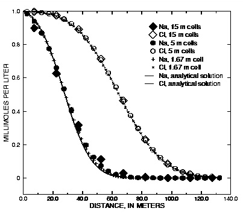
Figure 3.
--Analytical solution for 1D transport with ion-exchange reactions and constant boundary condition compared with PHREEQC calculations at various grid spacings.
| Next|| Previous || Top |